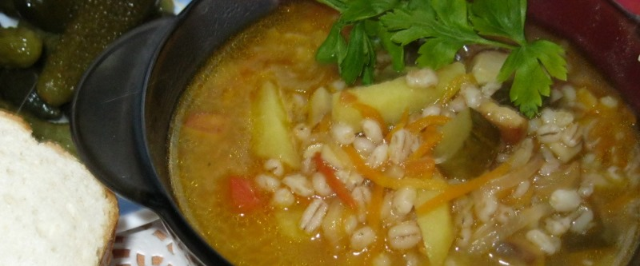

приготовление:
-
Замочить 250 г перловой крупы в холодной воде на ночь. Перед приготовлением слить воду и промыть крупу.
-
Положить в кастрюлю 500 г говядины на кости, залить 3 л холодной воды и довести до кипения. Снять пену, убавить огонь и варить примерно 1 час 15 минут, пока мясо не начнёт становиться мягким.
-
Добавить в кастрюлю замоченную перловку и варить вместе с говядиной 20 минут.
-
Пока варятся говядина и перловка, очистить и нарезать 1 морковь и 1 луковицу. Обжарить овощи на сковороде с небольшим количеством растительного масла до мягкости и лёгкой золотистости.
-
Достать готовую говядину из кастрюли, отделить мясо от кости, нарезать небольшими кусочками и вернуть в суп.
-
Очистить 3 картофелины, нарезать кубиками и добавить в кастрюлю. Варить 10 минут.
-
Добавить в суп зажарку из моркови и лука.
-
Нарезать 4 крупных или 8 средних маринованных огурцов, добавить в суп и варить ещё 5–10 минут, периодически помешивая. Проверить готовность картофеля и перловки.
-
Посолить и поперчить по вкусу. Снять суп с огня, по желанию добавить нарезанную петрушку или укроп и перемешать.
-
Подавать со сметаной.